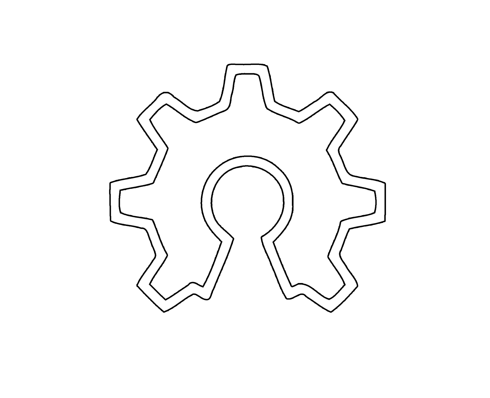

Previous Work & Experience
Career Milestones
- Setting up Community Internet in Slums: A crowd sharing network for the last million users.
- Started Pet Furniture brand "Tanuki".
- Working with local Wood industry to integrate digital fabrication techniques.
- Getting World bank Grant to set up Fab Lab IUB.
- Maintaining and setting up NVIDIA K80 GPU clusters at CCSE lab.
- Sending the Bangladeshi Flag to 1 Lac 6 Thousand Feet.
- Local Facilitator at Kolpokoushol.
- Project Argus Helmet from Maker's Lab.
- Project E-Braille showcased at Maker-Fest at Ahmedabad.
- Champion at First Make-a-Thon in Bangladesh.
Tools I am Familiar with
Hardware, Languages and other skills I'm familiar with
- Microcontrollers: Arduino, Atmega, ATTiny, PIC16f series, ESP8266, ESP32, PyCom, STM32
- Singleboard Computers: Raspberry Pi, Orange Pi series, NanoPi, Beaglebone
- Embedded: Arduino C, C++, AVR Assembly, Java, Bash Script, Python, microPython, Processing, openWRT, Cisco IOS
- Software Stacks: HTML, CSS, Javascript, Markdown, Jeckyll, C#, bootstrap, MATLAB
Hardware Platforms
Programming Stacks:
I take workshops on Digital Fabrication, Electronics & Design. Feel free to get in touch if you want me to conduct any workshops on the following topics.
Digital Fabrication
- 3D Design & Printing
- Laser Cutting
- Vinyl Cutting
- Large Scale CNC Machining
- PCB Micromilling
Electronics
- Eagle CAD
- Embedded Electronics
- PCB Manufacturing
Design
- Fusion360
- Partworks & V-Carve

Skills
Workshops taken by me
- Workshop on AVR Microcontrollers; at Fab Lab IUB
- Workshop on Single Board computers and Embedded Linux; at Fab Lab IUB
- The art of Making Useless things; at CCSE maker Camp
- Efficient programming on Arduino using external Editors; On Arduino Day 2015, BRAC University
- Workshop on PCB Design using Proteus
- Workshop on PCB Design using EagleCAD
- Introduction to robotics: Obstacle avoiding robots and Line followers
- Introduction to Arduino
Mentionable Workshops I Attended